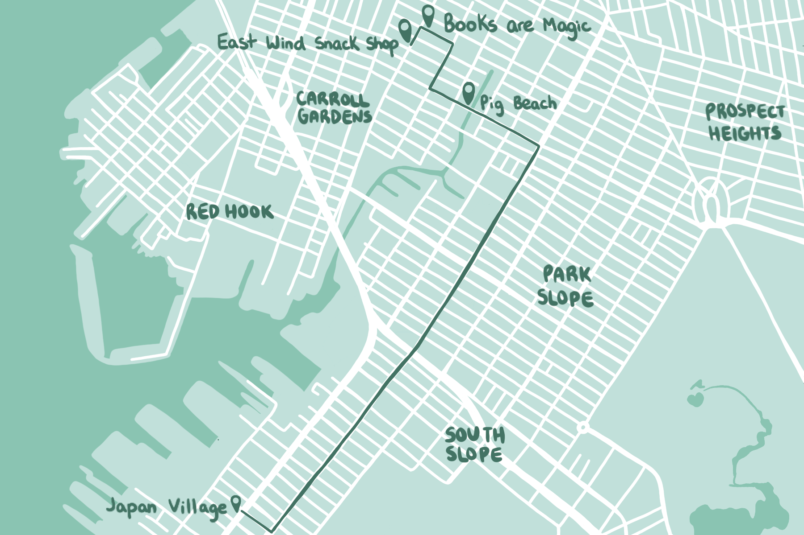
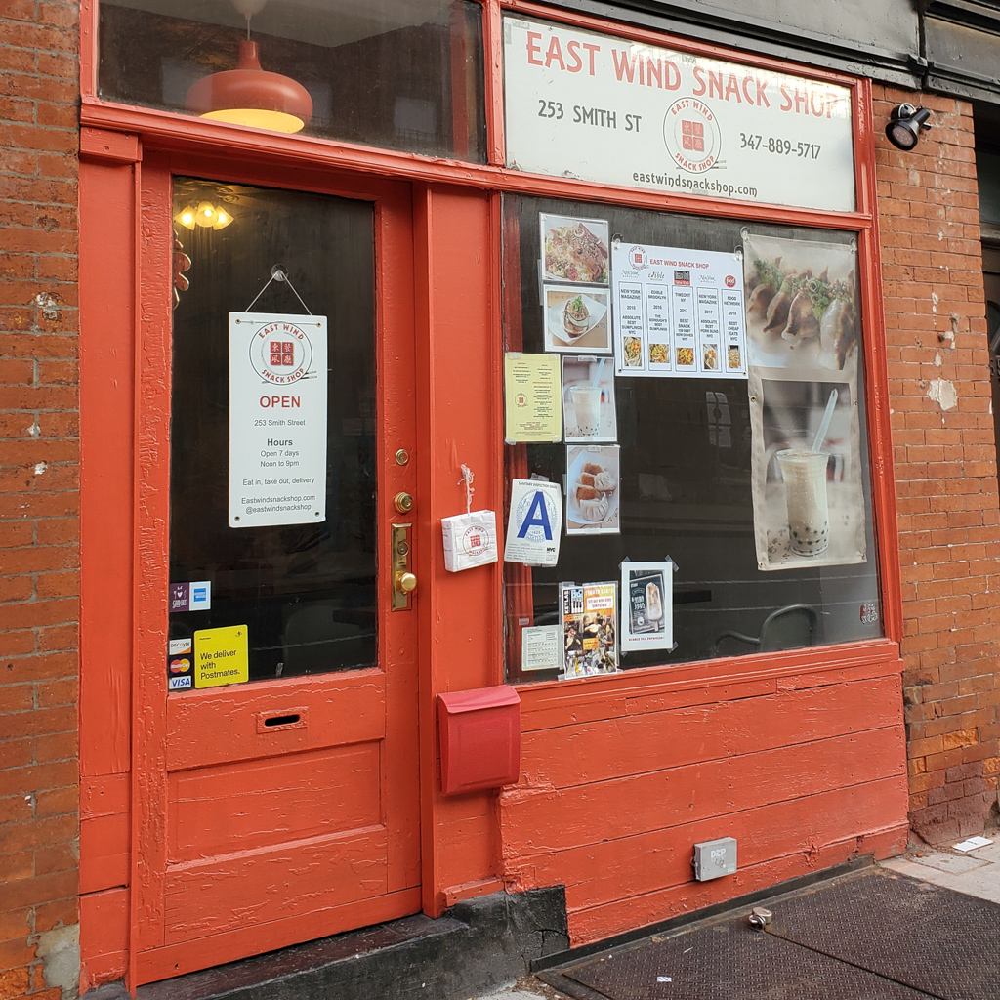
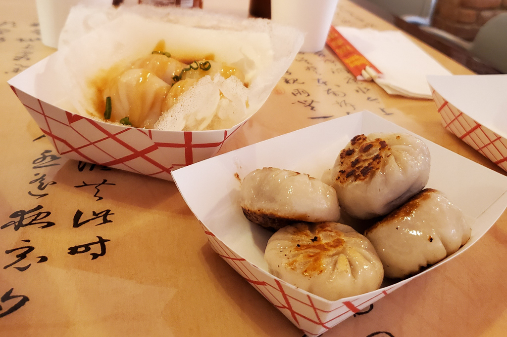
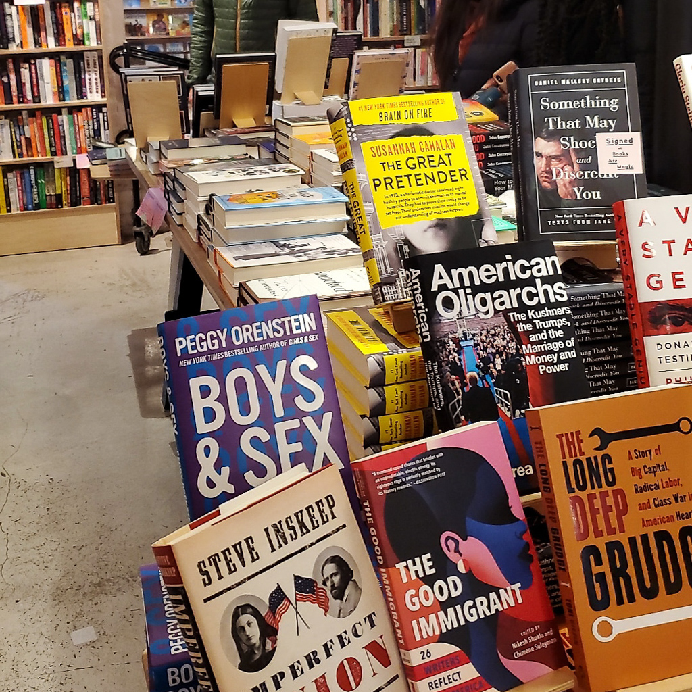
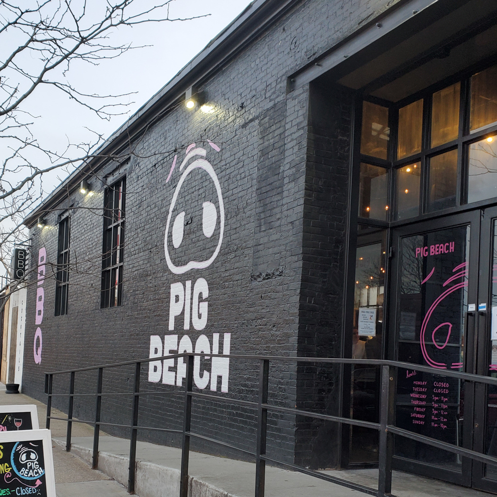
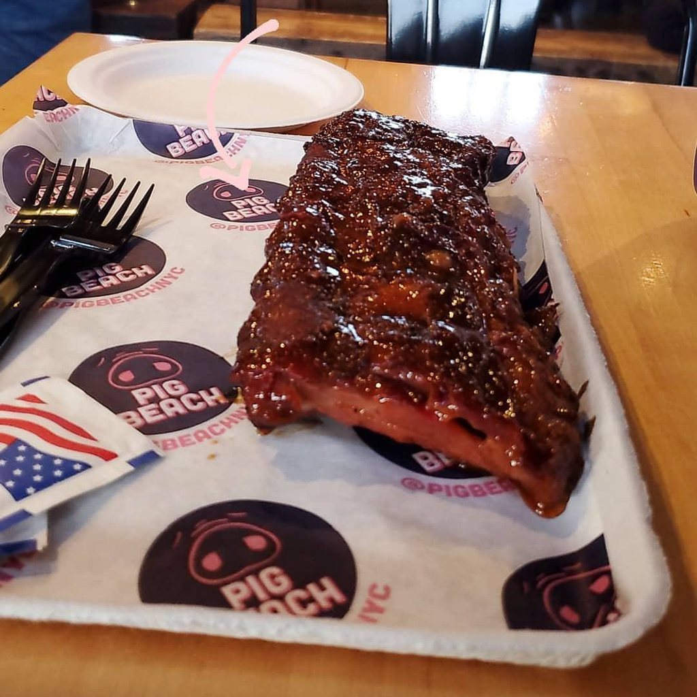
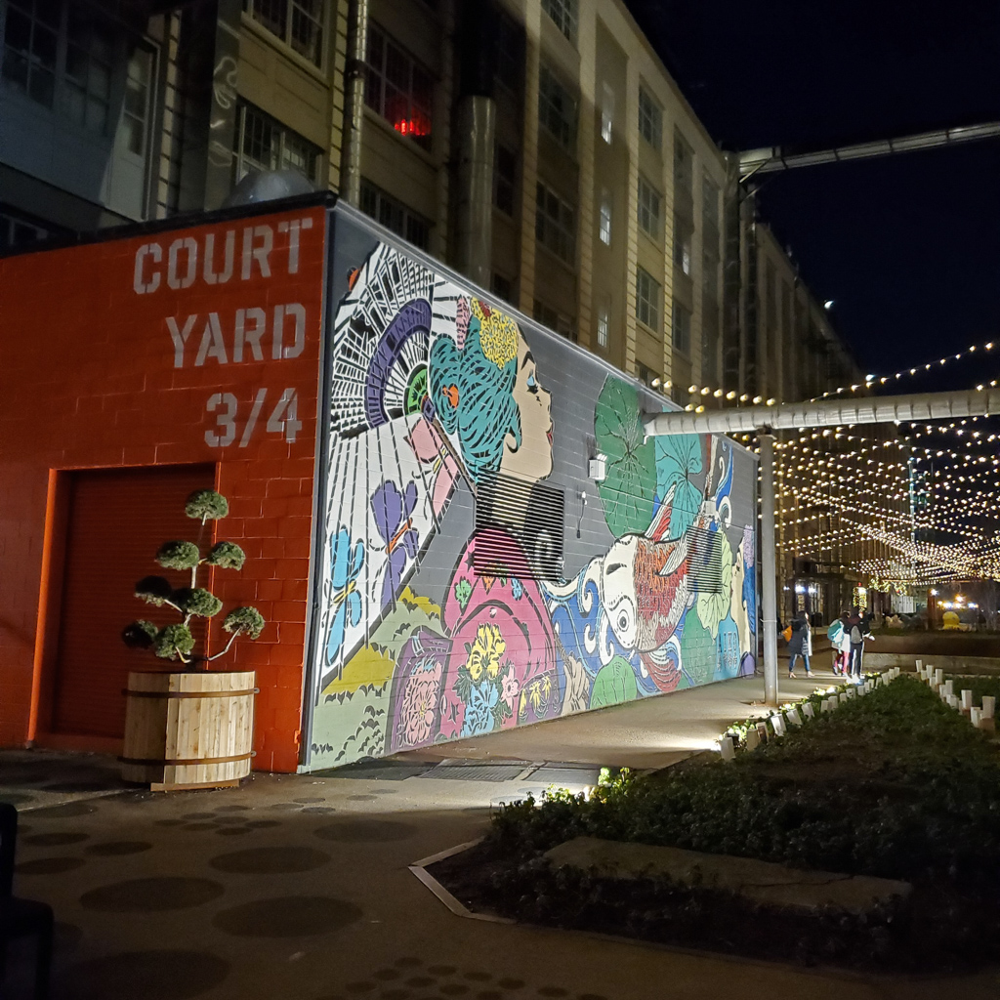
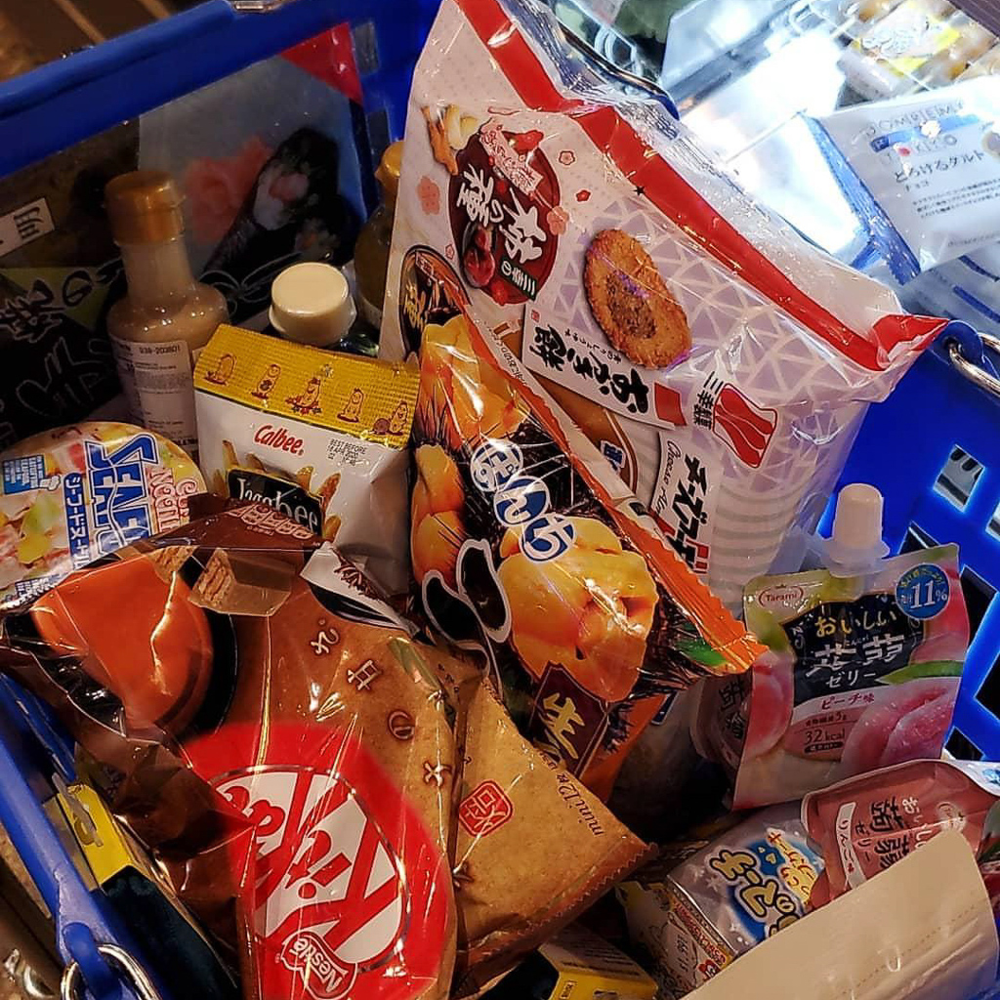
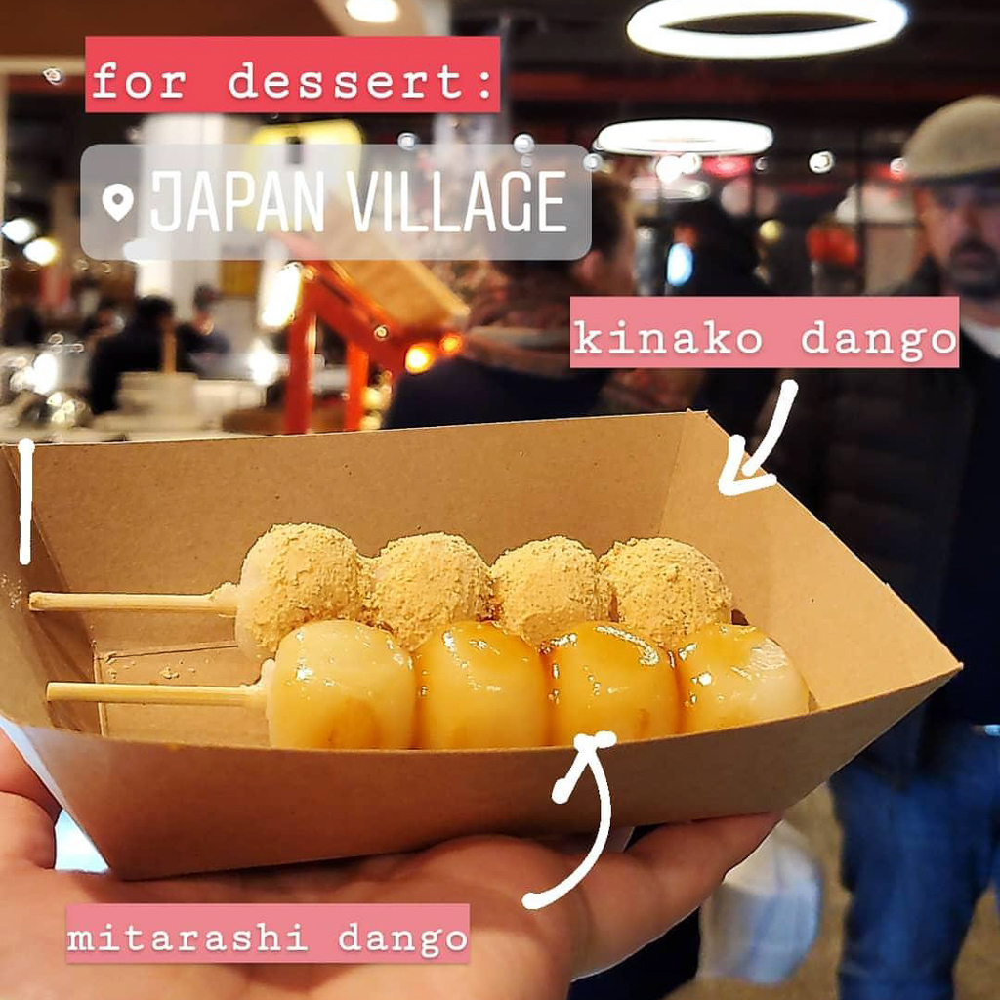

Brooklyn Food Tour
Nov 8 - Written by Bonnie and Emily
We’ve been Manhattan lovers for a while now, but one day back at our apartment we thought, why not wander a little into the great unknown that is called Brooklyn?
Considering how much food content we have on our Instagram accounts but never enough time to try them all, we decided to hit up some of the places we’ve been talking about for so long with determination. Having watched a youtube video on Japan Village in Industry City a few days earlier, we figured we’d try out a few more places to get more out of our trek all the way into Brooklyn. We dug out our saved restaurants list and picked out another spot we’ve been eyeing, the East Wind Snack Shop. Midway through our trip we got sidetracked by a few detours and found ourselves with a few extra stops on our Brooklyn tour. Who doesn’t like finding food gems, am I right?
Stop #1: East Wind Snack Shop - 253 Smith St
We first heard about the East Wind Snack Shop from the Bon Appetit staff that had raving reviews for this small store. Considering our love for dumplings and dim sum, we couldn’t pass up the opportunity to try this place out. Not to mention the many photos that were popping up on our Instagram feed of their yummy delicacies.
We figured the East Wind Snack Shop would be the best start to our tour to keep our tummies just full enough to make our way to our next stop. Since we didn’t want to get full from just our first stop on our food tour, we only ordered two items, “The Incredible Har Gow'' and the “Dry Aged Beef Potstickers”. The har gow, shrimp dumpling with a clear chewy wrapper, is one of their most popular items on their menu and also a famous dim sum dish. It's accompanied by a thin crispy lattice crust and topped with sweet and savory abalone sauce giving every bite a delicious combination of flavors and textures. The potstickers are encased in thin, handmade dough wrappers, pan fried to a beautiful golden crispy exterior that explode with juiciness. Although both were very delicious, the har gow is definitely our favorite item. Its unique flavor combination and lattice crust just keeps you coming back for more. If you ever find yourself near one of the East Wind Snack Shop locations that are scattered around Brooklyn, definitely check it out and grab a quick bite!
Detour: Books are Magic Bookstore - 225 Smith St
On our walk over to the East Wind Snack Shop, we passed by this cute little bookstore and decided to check it out after we grabbed a quick bite to eat. They had a large variety of books and most of all the most cozy atmosphere that could’ve kept us in there browsing all day!
Stop #2: Pig Beach - 480 Union St
On our long cold walk to the subway station, we stumbled upon the large pig nose painted on the side of the wall and quirky name Pig Beach caught our eyes. The hustle and bustle of Pig Beach made us feel confident that there must be something good cookin’ up in there. Remembering a Bon Appetit video of Molly Baz learning to barbeque at Pig Beach, there was no doubt in our minds we had to give it a try and fill up our tummy a little more before we made our way to Japan Village.
Despite our need to limit the amount of food we ordered to save some space in our tummy for the next stop, the items we ordered off the menu were delicious. Standing in front of the menu, we had a very unnecessarily serious conversation on one of the few items that we knew we couldn’t go wrong with, ribs. We may have ordered too much for our stomachs but the half rack of ribs we got definitely did not disappoint -- if you don’t go to Pig Beach on a 5 stop food tour, it definitely is a great price for a hearty meal. The meat was so tender it practically fell off the bones and the sauce was the perfect combination of sweet and smokey. Not to mention the lively atmosphere definitely tempted us to order a couple of beers on the spot as well. Good food plus a fun atmosphere made this a place a spot we definitely plan to go back to.
Stop #3: Japan Village - 934 3rd Ave
Sunrise Mart
Considering how this was the main event of our food tour for the day, we knew we had to make good use of our trip and stock up on snacks and goodies to bring back home. We started off our grocery run relatively slowly, only throwing in items we thought we could use to cook or drink like green tea, soba noodles, sesame salad dressing, and rice seasoning to make onigiris. But as we made our way down the snack aisles, our shopping cart ended up with a large pile of SNACKS, tons and tons of sweet and savory goodies to try.
Café Japon
After grocery shopping, you know we had to walk around the food court area that was teeming with people eating all different kinds of Japanese foods. We made a quick circle around Japan Village to get a good feel for all the different vendors and tasty food offerings they had. There were so many items that we wanted to try out but considering how much we had already eaten so much, we settled on getting some sweets from Cafe Japon instead. Since it was getting late in the day and we still had dinner plans after all the food stops we had made, we ordered a kinako dango and a mitarashi dango to try a variety from their menu. If you aren't familiar with what dango is, it is a sweet Japanese dumpling -- they’re chewy and soft but still quite firm. The dango was definitely the icing on the cake for us as we made a satisfying end to our Brooklyn food tour.
After a long day of walking and eating, our food tour finally ends at Japan Village where we hug our multiple bags full of snacks for the journey back to the East Village.